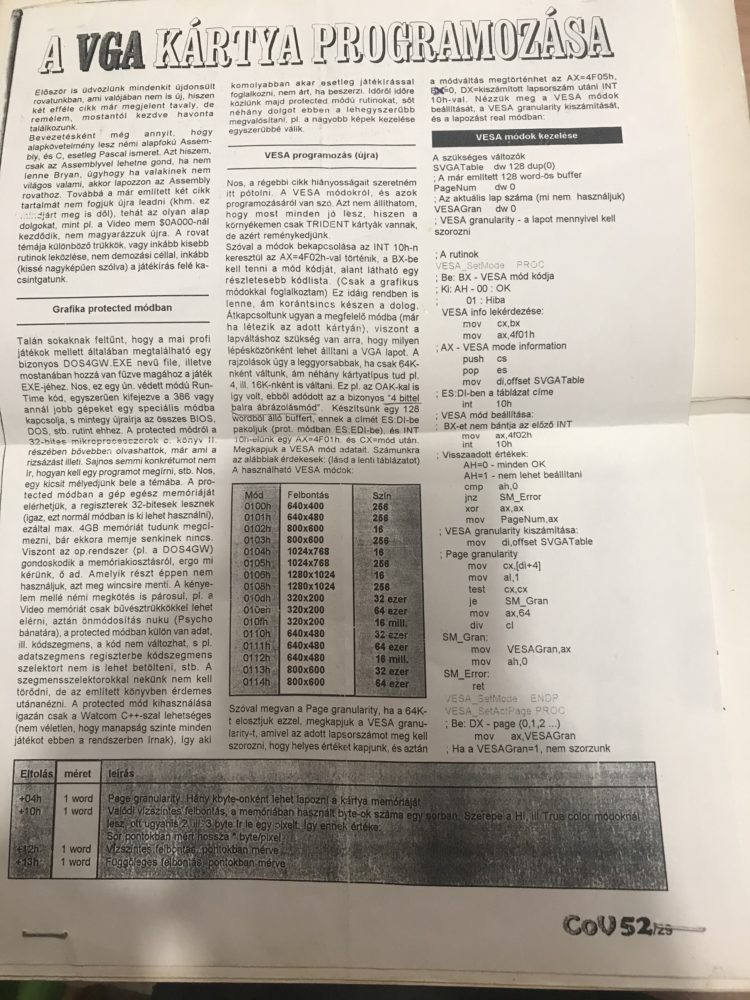

--- FILE: Dokumentáció a Rubik3.exe-hez
--- BOF ---
HI!
Nos hát végre eljutottam addig a pontig, hogy már csak valami információt
kell írnom agyatlanságom eme megnyilvánulásához. Ugyan foggalmam sincs,
hogy miről fog szólni a dokumentáció. Tegnap este azon gondolkodtam, hogy
egy bizonyos lány iszonyatosan a bögyömbe van, úgyhogy...
Na jó, de akkor viszont mi marad? Egy jótanács: nálam ugyan fut Win '95
alatt is a progi de pl. a Bólyai koleszban már nem, tehát ne csodálkozzon
senki, aki azt a ...-t használja, ha lefagy tőle a gépe. Screen shot-ot
pedig még nekem se sikerült használnom vele, mert valami x. védelmi hibát
okozott, tehát azt különösen nem ajánlom.
Hogy mit is tud a program? Elméletileg nagyon keveset, két jól megtermett
perspektívikusan ábrázolt, megvilágított Rubik-kockát hajtogat össze-visz-
sza. Ez a két kocka tulajdonképpen ugyanannak a kockának két különböző né-
zete (hogy egyszerre lehessen látni mind a hat oldalát).
A "kirakási algoritmus" az egyetlen általam ismert algoritmus segítségé-
vel született (gyk. soronként felülről lefelé). Az első sornál ez egy (i-
szonytatóan nagyképűen) optimalizálásnak nevezett módon le is egyszerűsítő-
dik, a többinél azért nem, mert akkor még én se látnám, hogy mikor mit csi-
nál. (Megj.: a "teljesen optimalizált" változat megtekinthető a -fo opció
használatával.) Az optimalizálás lényege az, hogy a felesleges oda-vissza
forgatásokat, az ugyanannak az oldalnak háromszori ugyanabba az irányba
történő elfordítását és az egész kocka elforgatását megfelelően módosítsa
(az elsőt és az utolsó elhagyja, a másodikat felcseréli egy ellenkező i-
rányba fordítással). Erre azért van szükség, mert az algoritmus kb. 35%-ra
zsugorodott azáltal, hogy a legtöbb esetet csak a szemben levő oldalra
vizsgáltam, és ha mondjuk a jobb oldalon kellett ugyanilyen vizsgálatot vé-
gezni, egyszerűen csak elfordítottam a kockát a függőleges tengely mentén.
Továbbá az egyes eseteket csak nagyon körölményesen lehetett egymás után
illeszteni, így pl. az első sornál irtó unalmas oldal oda-vissza forgatások
voltak teljesen feleslegesen.
Két olyan állapot van, ahol a kockát a kurzorvezérlő billentyűkkel lehet
forgatni, az összekeverés és a kirakás után. A z tengelyen (amelyik normá-
lis a képernyő síkjára) úgy lehet forgatni, hogy a Ctrl-re is rá kell ke-
nyerelni, aztán <- -> (ez a bal oldali kockára vonatozik, megjegyzem azt
célszerű nézni miközben forgatjuk, mert a másikon igen természetellenesen
jönnek ki az irányok).
Még egy iszonyú bonyolult billentyűkombinációt kell megjegyezni a szak-
szerű működtetéshez (ugyebár az ESC-et leszámítva): az összekavarás után
(meg a kézi forgatás után) egy Entert kell taccsolni.
Ráadás: a világítás kikapcsolható a -loff opcióval.
A program rövid története: tavaly tavasszal írtam az első verziót kb egy
hét leforgása alatt, ennek egyenesági következménye egy történelem egyes
volt, ami aztán elég sok kellemetlenséget okozott a félév további részében,
továbbá egy matek négyes is, mégpediglen koordináta-geometriából. (Ez utób-
biban csak az a bosszantó, hogy a Tóth Szilvi soha nem fogja megírni ezt a
programot, pedig neki 5-ös lett az a doga.) Tehát az 1.0 verzióban egy koc-
ka volt, naggyon rosszul nézett ki, sokkal lassabban forgott, nem volt meg-
világítva, és kisebb volt a képernyő felbontás is, meg a színmélység (vagy
mi a f.sz) is. Ezen kívül nem volt benne optimalizálás, és sokszor jutott
végtelen ciklusba. Végül még így is sokkal nagyobb volt, és összességében
nagyon bután, és módosíthatatlanul volt megírva.
Hogy miért nem teszem ide a forráskódot? Mert aki ezt megértené, annak
valószínűleg nem tartana túl sokáig valamivel jobbra megcsinálni, tehát ne-
ki nem sok értelme van iderakni. Aki meg nem látja át annak semmi kedvem ó-
rákig azt fejtegetni, hogy mit miért csináltam. Viszont ha valaki megmond-
ja, hogy mi az a négy dolog, amit lusta voltam belerakni az algoritmusba,
annak elküldöm, és beleteheti mindenféle jogdíj befizetése nélkül.
Már csak a mentegetőzés van hátra az esetleges hibákért. Aki netán fel
van háborodva ezek miatt annak ajánlom, hogy tömörítse ki az .exe-t
(PKLITE), aztán egy editorral nézze meg a végét, ahol a stringkonstansok
vannak. Ott valószínűleg meg fogja találni azt az oldalnyi y6+x1-z2+...-t,
amit elszúrtam valahol. Sajnálom.
Bár remélem nem túl sok hiba van benne, egyik délelőtt szépen egyesével
végignéztem az egészet.
Ha esetleg valaki azt tapasztalná, hogy a program kilép mielőtt befejezte
volna a kirakást, az reményeim szerint egy végtelen ciklusba keveredés mi-
att lesz (vagy csak a mélyen tisztelt felhasználó túl hamar tenyerelt rá az
ESC gombra?) Bár ezt majd csak holnap - pontosabban ma délelőtt - fogom
belerakni, remélem sikerül. Az eljárás azon a hihetetlenül primitív észre-
vételen alapul, hogy a kocka kirakásához szükséges forgatásoknak van egy
maximuma, amennyiből minden állapotot ki lehet rakni. Ezt jó durván felül-
becslem, aztán már csak azt kell figyelni, hogy mikor lépte túl a progi a
határt. A kilépés egy különösen informatív hibaüzenettel lesz indokolva, a
végén található számot nekem elküldők között sok értéktelen semmiséget sor-
solok ki.
Picit álmos vagyok, de még maghallgatom a Cserháti Zsuzsit a rádióban,
addig is a világ egyik legritkábban látogatott szeglete (általam is):
NCS@valerie.inf.elte.hu.
NA asszem kábé ennyit éremes elmondani, a többi már nagyon száraz lenne...
BYE.
U.I.:
Üdvözlet Berki Lukácsnak, Balázs Tibornak, Somogyi Eszternek, Hekli Szabi-
nának, Tisza Gergőnek, Megyesi Gergőnek, meg az összes olyan ismerősömnek,
aki szóba is áll velem.
NCS
-- EOF --
Te jó ég... Ki lehetett az a lány? És Cserháti Zsuzsa? Most komoly?
Ez a kis alkamazás még DOS alatt futott és Borland C-ben íródott. (Lehet, hogy volt már benne egy kis C++ is, de ha igen akkor csak mutatóban.) Még a gimnáziumban kezdtem rajta dolgozni, és az egyetem alatt ahol csak lehetett minden tantárgyból ezt használtam beadandónak.
Hatalmas királyságnak számított, hogy 640x480-as grafikus módot használtam hozzá és mindent kis pixel színét kézzel számolgattam ki. Akkoriban nem volt még DirectX, és lemezeken másolgatott text fájlokon, meg magazinokbók kifénymásolt papírfecniken terjedtek az információk.

Na, tudtam én hogy nem szabad kidobni semmit... Meg is találtam a szentírást az első C könyvembe betűzve. Szóval ehhez hasonló, Commodore világból kimásolt dolgokra tessenek gondolni.
Hatalmas poén hogy húsz évvel később még sikerült lefordítani, sőt DosBoxban el is indul, ami alighanem webassemblyben fut a böngészőben... Egy pár réteg rárakódott az évek alatt...